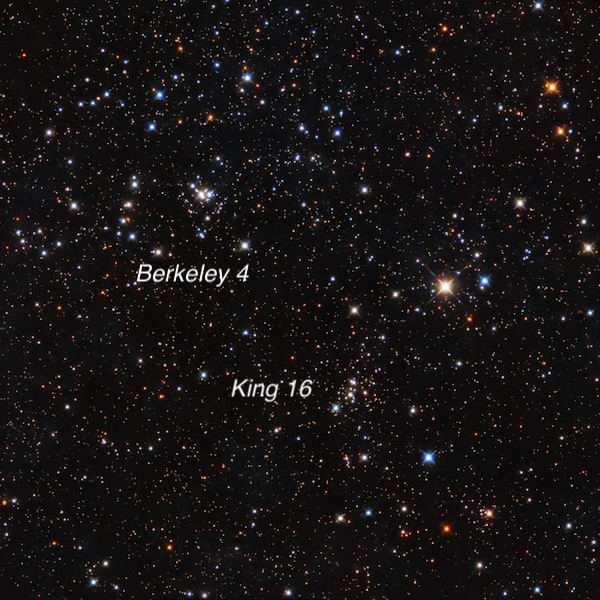
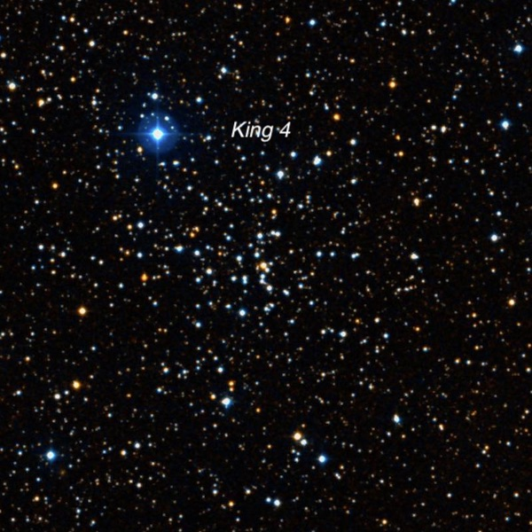
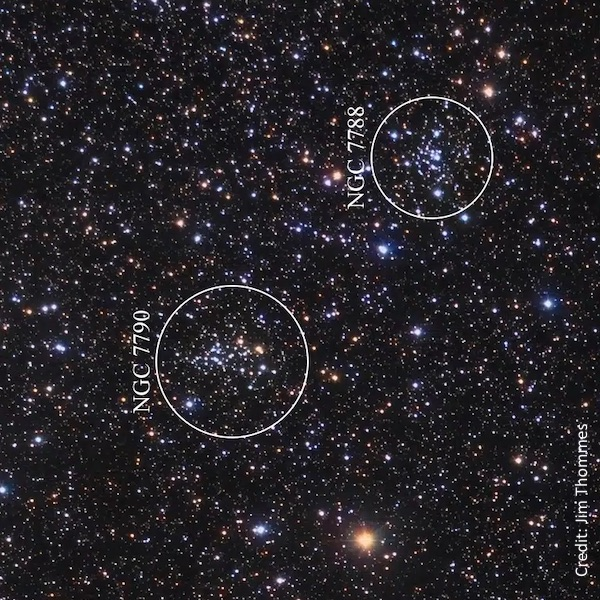

Open clusters at Lake Sonoma
On Wednesday, November 26th (the day before Thanksgiving), I took advantage of just a half-day teaching to rush over to Lake Sonoma. During the day it was perfectly clear, although cold. I couldn't find anyone to join me at Lake Sonoma, although after posting notices on TAC and TAC-SAC (the Sacramento area observer’s list), one other amateur showed up.
The drive was a slow crawl up highway 101 to Santa Rosa during the afternoon commute. But once I exited at Canyon Road near Geyserville, it was all deep blue clear skies, rolling green hills and gorgeous purple Sonoma County vineyards. After setting up at Lone Rock, Rob Mackie pulled in and set up his 16-inch reflector. Some bands of cirrus passed through at times and the seeing was only fair, but we had a very pleasant event chasing clusters and galaxies. For the first hour and a half I focused on some open clusters in Cassiopeia. I had last observed several of these objects in the mid-80s, so I figured it was time for a revisit and to pick up a few new ones. We experienced a small amount of dew, but overall it was a very peaceful, enjoyable few hours of observing. I usually post notes of galaxies, so here's a change of pace. All notes are through my 18-inch f/4.3 Starmaster with Zambuto optics.
King 16
00 43 46 +64 10.7
V = 10.3; Size 4΄
About two dozen stars were visible at 160× in a 3.5' group. Five brighter mag 10-12 stars form a small "Y" asterism in the center with the northern star, a nice mag 11/12 double at 10" separation. The brightest cluster member is a mag 10.5 star at the east end of the "Y". Most of the other stars are richly sprinkled around this "Y" and appear to be mag 13.5 and fainter. A faint stream of stars extends out of the core towards the north. Berkeley 4 lies 15' NNE.

Berkeley 4
00 45 13 +64 23.5
V = 10.6; Size 4'
Berkeley 4 is an interesting cluster of ~10 stars in a central 2' clump including mag 9.5 SAO 11367 with two fairly close mag 10.5 companions at 11" and 30". Another mag 11.5 star is 45" NE. This clump is partially enclosed by a semi-circle of mostly mag 13-14 stars running from west to east around the south side. Finally, there is a distinctive V-shaped asterism of eight mag 10.5-12 stars with the vertex facing east about 5' following the main group. King 16 and Berkeley 4 are experiencing a close encounter and may be interacting, but they are gravitationally unbound and will probably drift away from each other in the future.
Berkeley 62
01 01 12 +63 56.5
V = 9.3; Size 6'
About 20 stars mag 11 and fainter form a scattered group, roughly 5'x3'. Most of the stars are arranged in two parallel rows aligned WNW-ESE, with more of the stars in the northern row.
Stock 3
01 12 03 +62 16.4
Size 5'
Stock 3 is a small group of only a half-dozen mag 13 stars in a small 1.5' wedge shape. These stars are detached in the field but are very unimpressive visually.
King 4
02 36 02 +59 01.0
V = 10.5; Size 5'
Using 257×, this is a rich group of approximately two dozen mag 13-15 stars in a 4'-5' region. Several of the brighter mag 13.5 stars are arranged in a N-S string which extends through the cluster and bends towards the northwest beyond the group.

Czernik 13
02 44 27 +62 19 30
Size 5'
Using 161x, about 20 stars mag 13 and fainter are visible in a 5'x3' region elongated SW-NE over some unresolved background haze. This cluster is situated just 4' north of mag 7.8 SAO 12419, which detracts from viewing.
NGC 7788
23 56 46 +61 24 00
Size 9'
This is a fairly small, rich clump of roughly two dozen stars in a 4' region. It includes a mag 9.7 star (SAO 20947) on the west side. Several other mag 10 stars are scattered nearby but the cluster still stands out fairly well in a rich Milky Way star field. NGC 7790 is situated 16' SE.

NGC 7790
23 58 24 +61 12 30
Size 17'
About 30 stars are resolved in a 4.5'x2.5' region, fairly rich. Three mag 11 stars are along the west side of the cluster and a slightly brighter mag 10 star is ~4' southeast of the main group. This cluster is slightly larger than NGC 7788 ~16' NW. Fainter Be 58 lies 20' SE.